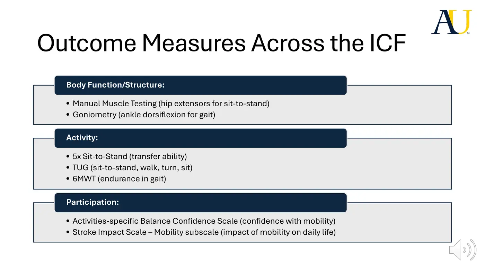
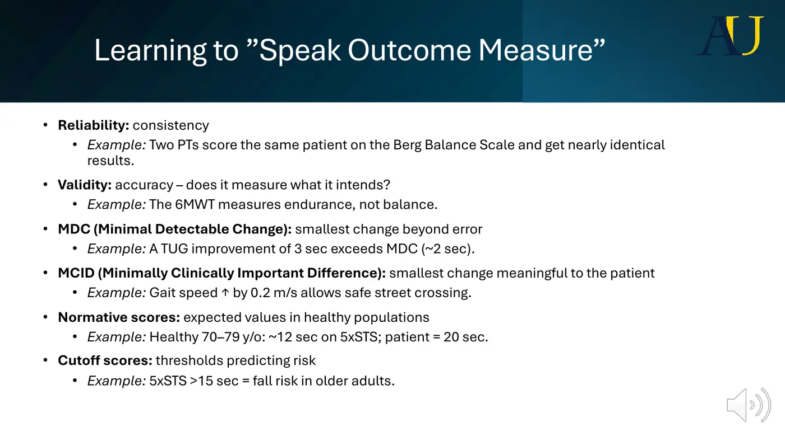
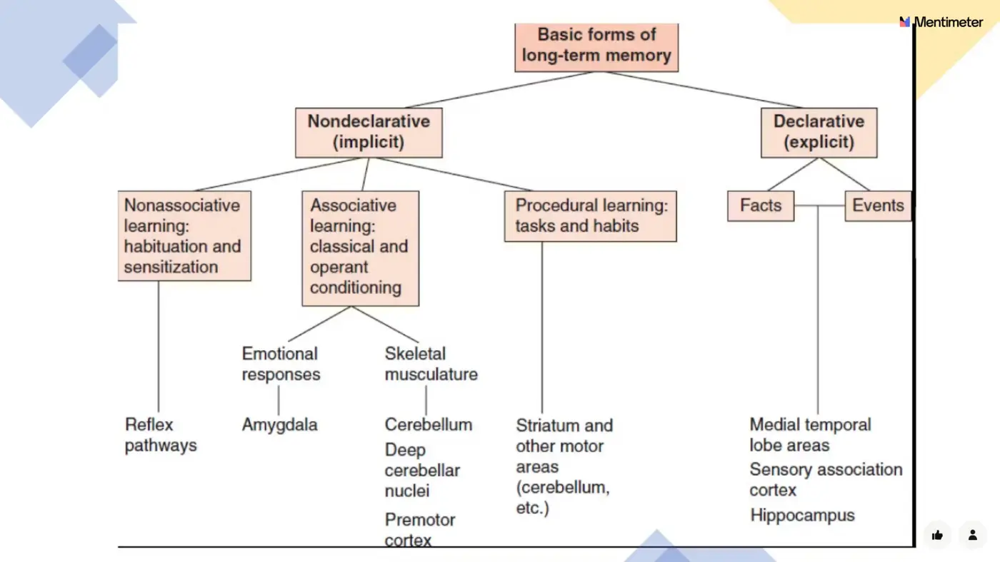
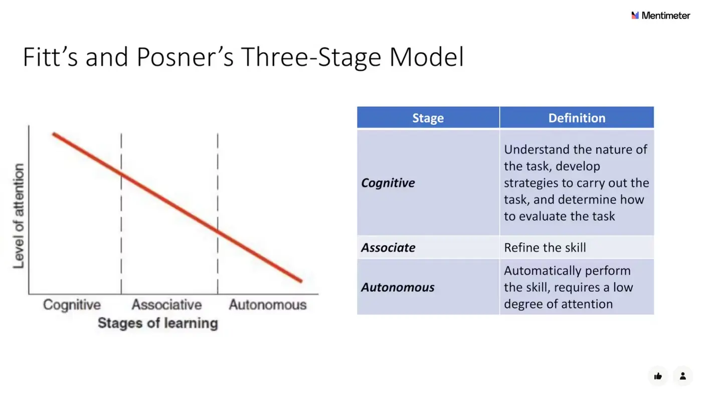
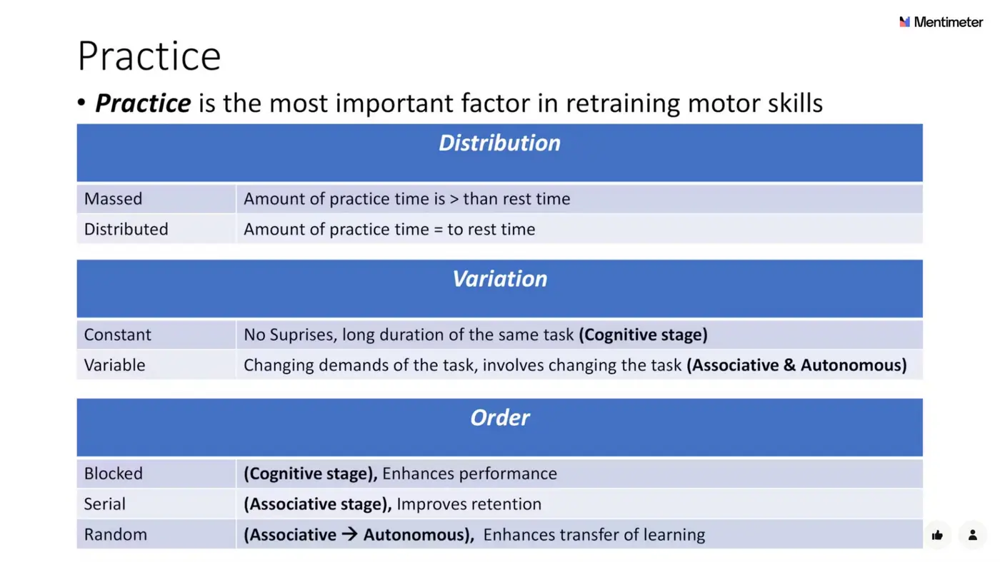

Movement Science · 6221
Module 5 — Outcome Measures, Motor Learning & Neuroplasticity
Topics: 5.1 Outcome Measures • 5.2 Motor Learning • 5.3 Neuroplasticity • Sync: atypical-video practice + application
📖 How to Use These Notes
- Best used with the lecture playing — keep these open, follow along, and add your own notes as you watch
- Lecture banners mark the start of each topic and run in the same order as the videos
- 🎙 Callouts = direct insights from the instructor's transcript
- ★ Tips = exam-relevant content or things the instructor told you to prepare
- Figures are taken directly from the module's slide decks
- Each topic ends with its own Quick-Reference Glossary
- Written from last year's recordings — if a lecture has been re-recorded or resequenced, Canvas wins
- Lecturers: Dr. Kristin Grimes (5.1), Dr. Kerry Mallini (5.2, 36:45 — the long one), Dr. Lindsay Perry (5.3 parts 1+2) — watch in your own Canvas module
- Assignment: PhysioU OM MiniSims + Reflection; then Module 6 is LAB IMMERSION — this module is the last async content before it
- Build the outcome-measure study table the course asks for (columns in Topic 5.1 below) — it doubles as your lab prep
- The three topics are one story: measure the movement (5.1) → structure the practice (5.2) → drive the brain change (5.3)
TOPIC 5.1
Outcome Measures — Choosing, Speaking, Interpreting
1. The Selection Logic
- Outcome = a measurable change in health, performance, or perception. Outcome measure = the standardized tool that captures it. Every selection starts with two questions: what ACTIVITY is the patient working on, and what MOVEMENT PROBLEM interferes — too slow, uncoordinated/poorly timed, inefficient/compensatory, imbalanced, or force-deficient. A test that doesn't capture that pairing is the wrong test, however convenient.

2. Speaking Outcome Measure (the terminology)

| Term | Meaning | Lecture example |
|---|---|---|
| Reliability | Consistency — same result across time and raters | Two PTs score the Berg within a point or two = strong inter-rater reliability |
| Validity | Measures the RIGHT construct | 6MWT measures endurance — it is NOT a balance measure |
| MDC | Smallest change beyond measurement error | TUG MDC ≈2 s → a 3-s improvement is real, not noise |
| MCID | Smallest change that matters to the PATIENT (population-specific) | +0.2 m/s gait speed post-stroke = crossing the street before the light changes |
| Normative scores | Healthy same-age benchmarks | Healthy 70s ≈12 s on the 5xSTS; your patient's 20 s is well below expected |
| Cutoff scores | Risk/categorization thresholds | 5xSTS >15 s = fall risk in older adults |
- Clinical utility balances time/cost, training/certification, equipment, and patient + clinician burden — but the veto question stays: does it capture THIS patient's activity + movement problem? Build the course's study table per measure: name · ICF component · construct · unit/scale · set-up · equipment · cutoff/ranges · interpretation · validated populations.
3. The Measure Library (by activity — all on PhysioU/RehabMeasures)
| Activity | Measures |
|---|---|
| Rolling / coming to sit (bed mobility) | Physical Mobility Scale (facilitation-graded per task; blank form in this Drive folder) · AMPAC short form (acute care) |
| Postural control — sitting + standing | Berg Balance Scale · Tinetti · Function in Sitting Test · CTSIB · Four Square Step Test · Functional Reach · Mini-BESTest · Romberg + Sharpened Romberg |
| Sit-to-stand / transfers | Five Times Sit to Stand · 30-Second Sit to Stand |
| Reach + grasp | Nine-Hole Peg Test · Box and Block · Jebsen-Taylor Hand Function Test |
| Gait — speed, endurance, adaptability | 10MWT · TUG · 6MWT · Dynamic Gait Index · Functional Gait Assessment · HiMAT (interpretation anchors from Move Sci M4: <0.4 / 0.4–0.8 / >0.8 m/s ambulation classes) |
Topic 5.1 — Quick-Reference Glossary
| Term | Definition |
|---|---|
| Selection rule | Activity + movement problem decide the measure |
| MDC vs MCID | Beyond error vs beyond caring — a change can be real yet not meaningful |
| 5xSTS anchors | ~12 s healthy 70s · >15 s = fall risk · MDC 2–3 s |
| TUG | Fall risk + turns + gait speed in one; MDC ≈2 s |
| RehabMeasures DB | SRALab — your reference for every measure's psychometrics |
| Study-table columns | Name · ICF · construct · scale · set-up · equipment · cutoffs · interpretation · populations |
TOPIC 5.2
Motor Learning — Theories, Feedback, Practice
1. What Learning Is (and Isn't)
- Motor learning = acquisition and/or modification of a skilled action (motor control = controlling movement already acquired). It integrates motor control + perception + cognition, shaped by individual × task × environment. Attention — detecting, selecting, sustaining, shifting awareness — and memory are its cornerstones. Learning = a relatively permanent change, proven only by a retention test (same task, later) or a transfer test (new context — clinic gait → outdoor gait). Cramming's the counterexample: great performance tomorrow, gone in a week — performance ≠ learning.

| Form of learning | What it is | PT use |
|---|---|---|
| Habituation (non-associative) | ↓response to a repeated benign stimulus | Vestibular-hypofunction dizziness exercises; desensitizing tactile defensiveness (the nail-trimming kids) |
| Sensitization (non-associative) | ↑response after a threatening stimulus | Heightening stimulus awareness during balance retraining |
| Classical conditioning (associative) | Predict stimulus→stimulus | Verbal cue paired with manual assist → eventually the verbal cue alone drives the transfer |
| Operant conditioning (associative) | Predict behavior→consequence | Praise + task success reinforce the movements you want repeated |
| Procedural | Slow, repetition-built, becomes automatic | Gait practiced across tile → gravel → busy gym → ramps/curbs/stairs → dual task |
2. The Two Theories You Apply
- Gentile's two stages: (1) get the IDEA of the task — goals, strategies, and which environmental features are regulatory (matter) vs non-regulatory; (2) fixation/diversification — closed skills (stable environment, e.g., uniform stairs) get fixed into consistency; open skills (changing environment) get diversified. Her taxonomy crosses environment (stationary vs in-motion × intertrial variability) with body demands (stability vs transport × manipulation) = 16 difficulty levels — the tee-ball → adjustable tee → pitching machine → live pitcher story. Use it to dose the just-right challenge.

3. Feedback
| Dimension | Options | Retention rule |
|---|---|---|
| Source | Intrinsic (proprioceptive, visual, vestibular, cutaneous — natural) vs extrinsic/augmented (added cues) | Build the patient's INTRINSIC reference of correctness — mirrors and video early |
| Timing | Concurrent (during) vs terminal (after) | — |
| Content | Knowledge of results (outcome) vs knowledge of performance (movement quality) | KP when errors become consistent |
| Schedule | Constant (every trial) vs variable: summed (every Nth) · faded (frequent→rare) · bandwidth (only outside an error range) · delayed | Constant speeds acquisition but SLOWS retention; variable does the reverse — retention is the goal |
4. Practice

- Massed (practice > rest — watch fatigue and injury) vs distributed (rest ≥ practice — for complex/fatiguing tasks). Blocked (one task repeatedly — boosts performance, cognitive stage) vs serial (set rotation — associative, retention) vs random (mixed — best long-term retention + transfer). Constant vs variable (variable → adaptation + generalization — essential for tasks like walking). Whole vs part: break complex tasks down, but ALWAYS reintegrate the whole task in the same session. Transfer scales with similarity between practice and target environments. Mental practice produces real gains. Guidance belongs to the cognitive stage only — then fade to discovery learning (trial and error).
| Stage | What the learner is doing | Your strategy |
|---|---|---|
| Cognitive | Figuring out WHAT to do; variable performance, heavy attention | Demonstrate ideal performance (reference of correctness) · patient verbalizes components · emphasize intrinsic feedback (mirror/video) · feedback each trial · distributed practice if complex or fatiguing · sparing manual guidance · part→whole within the session · blocked → variable · CLOSED skills, quiet environment |
| Associative | Refining HOW; fewer errors, slow improvement | Knowledge of performance for consistent errors · emphasize the FEEL (proprioception) · guidance now counterproductive — avoid · variable feedback (summed/faded/bandwidth) · random/serial practice · progress toward open environments |
| Autonomous | Automatic; attention freed | Occasional feedback only · self-evaluation expected · massed practice OK · vary tasks AND environments · add dual tasks (carry a cup; ABCs backwards; count back by 3s) · prep for home, work, community, sport |
Topic 5.2 — Quick-Reference Glossary
| Term | Definition |
|---|---|
| Learning test | Retention or transfer — never same-day performance |
| Regulatory features | The environmental facts the movement must respect |
| Gentile taxonomy | Environment (stationary/motion × variability) × body (stability/transport × manipulation) = 16 |
| Fitts & Posner | Cognitive → associative → autonomous; attention falls as you go |
| KR vs KP | Outcome vs movement-quality feedback |
| Constant-feedback trap | Fast acquisition, poor retention — go variable |
| Random practice | The retention + transfer winner |
| Guidance rule | Cognitive stage only, then discovery learning |
TOPIC 5.3
Neuroplasticity — Mechanisms and the 10 Principles
“Every man can, if he so desires, become the sculptor of his own brain” — Ramón y Cajal. Neuroplasticity = the brain's capacity to change, remodel, and reorganize synaptic connections in response to behavioral, sensory, and cognitive experience. It never stops — and it's NEUTRAL: stress, sleep deprivation, sedentary behavior, and age drive maladaptive plasticity too.
1. Mechanisms
| Mechanism | What happens |
|---|---|
| Structural vs functional plasticity | Synaptic efficiency/strength changes, synaptogenesis, neurogenesis (mostly developmental; some adult + post-injury) vs reorganization of connections through learning/memory |
| Denervation supersensitivity | Post-synaptic membranes become hyperresponsive to remaining neurotransmitter after losing input — seen in Parkinson's |
| Unmasking of silent synapses | Dormant redundant connections recruited when needed — the spare roadway you take when the main road's blocked |
| Regenerative synaptogenesis | The injured axon itself sprouts — can start within days of a lesion |
| Collateral sprouting (reactive synaptogenesis) | NEIGHBORING healthy axons claim the orphaned synaptic sites — usually within the same circuit |
| LTP / LTD, pruning | Long-term potentiation strengthens synapses (memory's substrate); long-term depression weakens; pruning sculpts |
| Cortical remapping | Function shifts to residual tissue — neural COMPENSATION (vs restorative recovery of the damaged tissue itself); enhanced by skill training, stimulation, pharma |
- Skill training ≠ any training. A generic 3×10 of isolated triceps extensions won't remap a brain; a goal-oriented reach — joint coupling, force grading, an object that matters — will. And exercise-induced plasticity primes the canvas: aerobic training at 76–95% HRmax (resistance >70% 1RM, dose still emerging) upregulates BDNF — neuroprotection, angiogenesis, plasticity, better post-stroke learning and cognition. Post-stroke protocol from the lecture: >30 min aerobic at ~70% HRmax, 4 days/week, aerobic + resistance combined. Exercise primes; coupled skill training remaps.
2. Kleim & Jones' 10 Principles (2008 — the required article)
| Principle | Meaning + rehab application |
|---|---|
| 1. Use it or lose it | Unused functions degrade — the forced-use paradigm behind Taub's constraint-induced movement therapy (CIMT) |
| 2. Use it and improve it | Challenge the affected component to enhance it — CIMT improved UE speed, efficiency, use, AND showed cortical remapping |
| 3. Specificity | Practice in the target context: biomechanical specificity (ankle-only work won't fix foot clearance in gait), information-processing specificity (layer dual-tasks at the autonomous stage), task + environment specificity (quiet room vs airport; the exact grasp for the exact object; include the timing) |
| 4. Repetition matters | Usual PT care "atrociously underdoses" reps. Massed suits discrete tasks; distributed suits complex ones — either way hit the COUNT. Repetition also makes gains resistant to decline between episodes of care |
| 5. Intensity matters | The BDNF thresholds above; RPE works as a proxy. Overtraining risk in acute stroke. Merlo's five participation factors: manageable fatigue · difficult-but-attainable · sufficiently long program · enjoyment · manageable soreness |
| 6. Time matters | Plasticity is sequential (gene expression → synaptogenesis → map reorganization) — and DELAYED rehab gives compensations time to entrench and block recovery |
| 7. Salience matters | Meaningful, emotionally engaging, rewarded experience strengthens memory and learning |
| 8. Age matters | Younger brains adapt faster; older brains still adapt — budget more repetition and intensity |
| 9. Transference | Plasticity in one circuit promotes more — TMS coupling, and exercise priming (angiogenesis) before skill work |
| 10. Interference | Plasticity can BLOCK plasticity: mistimed stimulation, learned non-use, self-taught compensations; cognitive deficits change how feedback lands |
Topic 5.3 — Quick-Reference Glossary
| Term | Definition |
|---|---|
| Neuroplasticity | Experience-driven synaptic change — neutral; maladaptive exists |
| Recovery vs compensation | Damaged tissue restored vs residual tissue takes over (remapping) |
| Denervation supersensitivity | Hyperresponsive post-synapse (Parkinson's) |
| Silent synapses | Dormant redundancy, unmasked by need |
| Regenerative vs collateral sprouting | Injured axon sprouts vs neighbors claim its sites |
| BDNF recipe | Aerobic 76–95% HRmax · resistance >70% 1RM · exercise primes, skill training remaps |
| CIMT | Principles 1+2 in action (Taub) |
| Learning-dependent = experience-dependent = activity-induced | Synonyms — mark them |
SYNC SESSION 5
Atypical Videos + Putting the Module to Work (Dr. Grimes & Dr. Perry)
- The sync's practice loop runs Module 4's analysis on video cases — rolling/come-to-sit, two sit-to-stand clips, a seated reach-to-grasp (links on the Canvas sync page): describe the atypical CONSTRUCTS → initial conditions + preparation → strategies at initiation-execution-termination → hypothesize impairments. Impairment menus provided: musculoskeletal (pain, muscle performance — weakness/endurance, limited ROM, joint restriction, postural deficits, edema, poor extensibility) and neuromuscular (pain, static/dynamic postural control + balance confidence, incoordination/timing, tone differences — hypo/hyper/dystonia, sensory + proprioceptive + visual deficits).
- Then the module's answer to "how does atypical movement IMPROVE?": the PT toolkit = ICF framing + neuroplasticity + motor learning + attention (detect/select/sustain/shift — tightly tied to working memory) + memory (the nondeclarative/declarative tree) + the principles + practice + feedback design. Clinical take-home: movement analysis shapes the examination; the right outcome measure turns observations into tests and measures; motor-learning principles structure the session; brains can change.
🔗 Required resources — Module 5
- SRALab Rehabilitation Measures Database
- PhysioU: Berg Balance Scale
- PhysioU: Mini-BESTest
- PhysioU: Five Times Sit to Stand
- PhysioU: 10 Meter Walk Test
- PhysioU: Timed Up and Go
- PhysioU: Functional Gait Assessment
- Physio-pedia: Nine-Hole Peg Test
- Physio-pedia: Box and Block Test
- Neuroplasticity intro video (Sentis, 2 min)
- Kleim & Jones 2008 — the 10 principles (required)
- Leech et al. — Updates in Motor Learning (required)
- Sync video: atypical rolling + come to sit
- Sync video: atypical sit-to-stand
- Sync video: reach to grasp (watch 10:30–11:10)
Readings (keep them beside these notes): Motor Control Ch 2 pp 22–39 (motor learning), Ch 4 pp 84–86 + 104–107 (neural basis), Ch 16 pp 440–452 + 462–463 (task-oriented gait exam); IFO Ch 1 pp 5–6 + 10–11 (Box 1.5), Ch 2 (Box 2.2 — stage-matched strategies); Kisner & Colby Ch 8 pp 281–283 (Table 8.2). The full PhysioU measure list per activity is linked on the Canvas Topic 5.1 page.